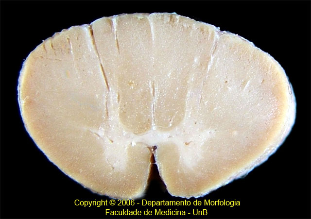

Identifique as seguintes regiões:
Fissura mediana anterior
Funículo anterior
Corno anterior
Corno lateral
Corno posterior
Funículo lateral
Funículo posterior
Fascículo grácil
Fascículo Cuneiforme Septo intermédio-posterior Sulco lateral posterior
Septo intermédio-posterior Sulco lateral posterior
Sulco lateral posterior
Copyright © 2006 Departamento de Morfologia - Faculdade de Medicina - UnB - Todos os direitos reservados.